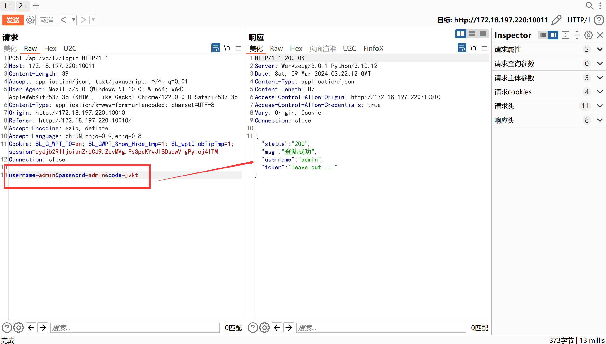
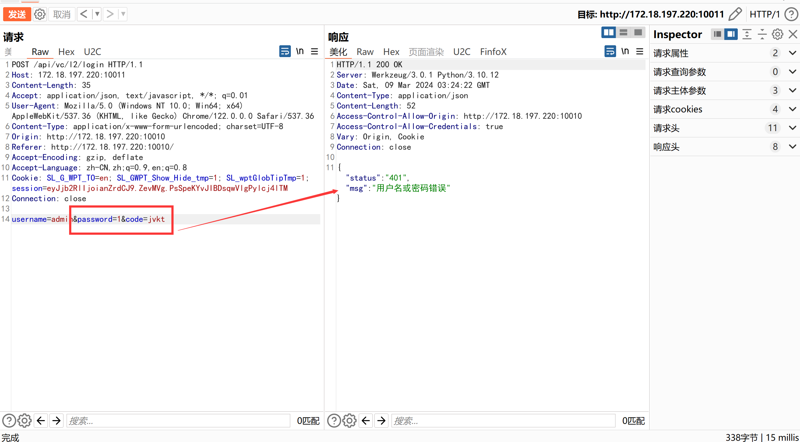
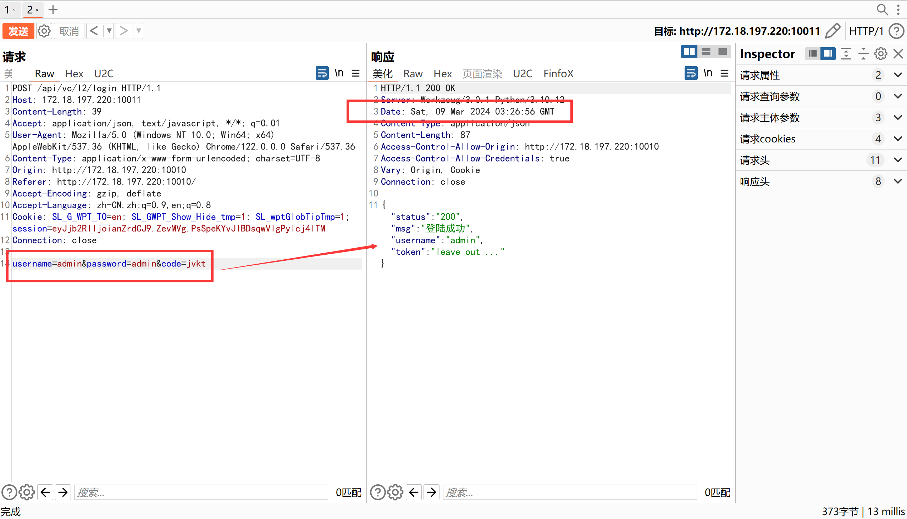

服务端验证码绕过
后台登录
思路提示
- 这个验证码怎么不刷新哇？？！
正确实现
在WEB页面登录任意账号，输入正确的验证码，并抓包：
可以发现登录请求包附带了页面输入的验证码，此时修改密码为错误密码，并重放：
请求包在没有修改验证码的情况下，提示“用户名或密码错误”，而不是验证码错误。
此时再修改密码为正确密码，验证码不变，依旧可以登录成功：
可以发现，验证码虽然经过服务端验证，但是在登录失败时或登录成功后，验证码均未刷新。
因此只需服务端首次完成验证码判断后，固定参数
code值不变，则仍可进行密码枚举。
源码解析
- 验证码在后端进行验证，但登录成功或失败后，并没有更新验证码，导致一个正确的验证码可反复使用：